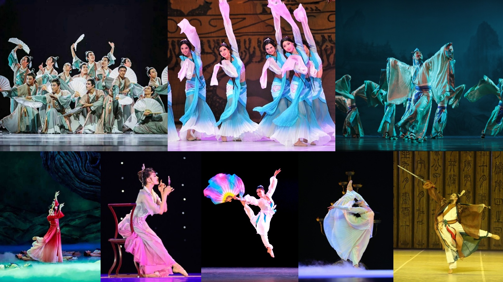
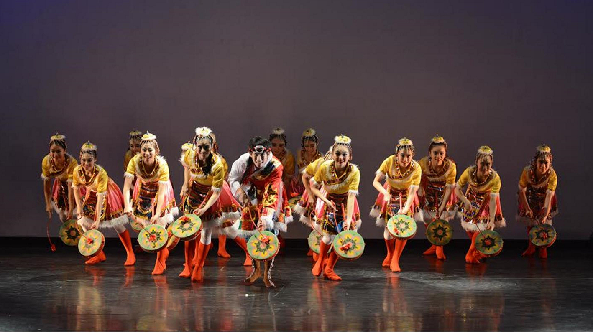
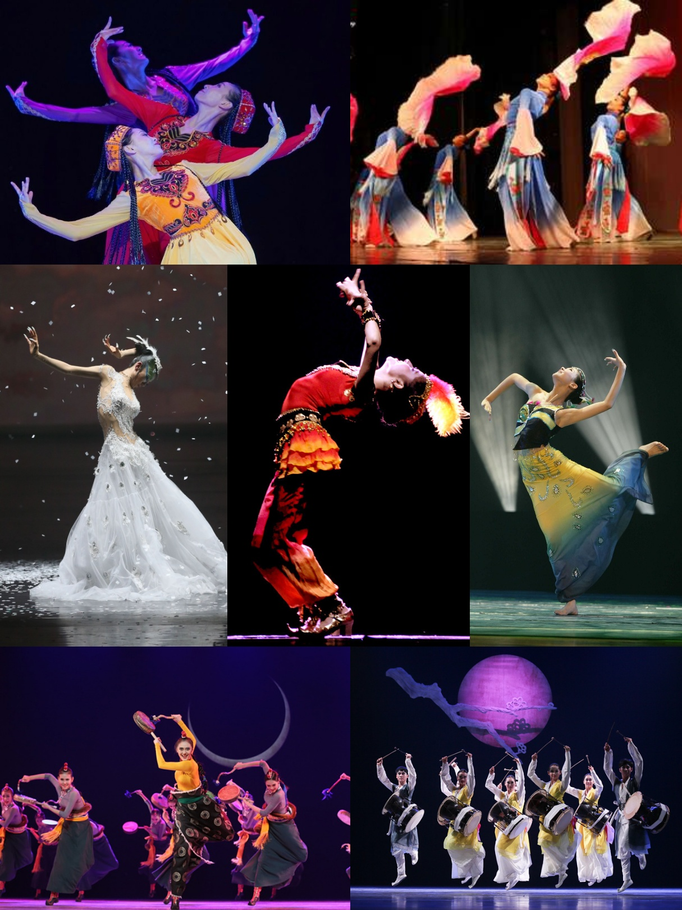
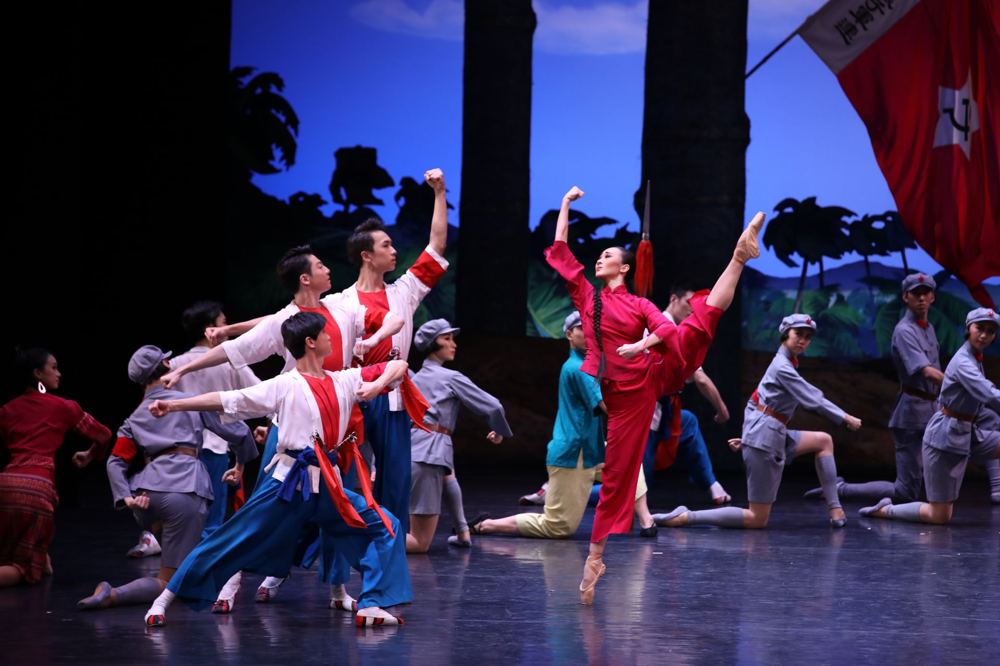
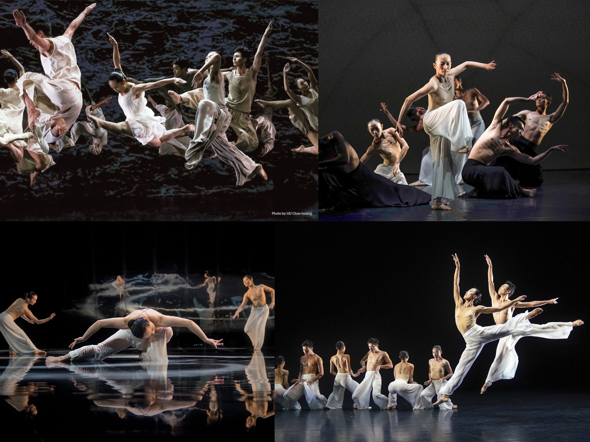

On a very basic level, Chinese dance can be divided into: Chinese classical dance, Chinese folk dance, and modern and contemporary dance.
I. Chinese Classical Dance

Established on the foundation of the five-thousand-year-old, vast Chinese culture, Chinese classical dance is one branch of the arts that uses the body as a performance medium.
The movements of Chinese classical dance are rich in their ability to express a variety of feelings, be it happiness, sorrow, joy, anger, grief, delight, the emotions that come with parting and reuniting, insanity, infatuation, sickness, tipsiness, solemnity, ignobility, and majesty, as well as civil, military, and other personalities and stories.

In Chinese classical dance, it is meaning that drives the body into motion. In other words, in this dance form, only when inner feelings drive the body is full expression achieved.
Chinese classical dance uses the human body's natural ability; it does not require specifically training individual muscles. That is, the muscle strength gained naturally through walking, running, jumping, climbing stairs, riding a bicycle, etc., as well as the upper-body strength naturally built through physical labor, is further strengthened in the course of training.
Dunhuang Dance is a special branch under Chinese classical dance. It originated from Dunhuang fresco in Dunhuang, Gansu province, West China. The dances itself is influenced by Buddha images and Buddha religion.
II. Chinese Folk Dance

Folk dances are important historically in the development of dance in China, some of the earliest dances in court rituals and ceremonies may have evolved from folk dances. There are 56 officially recognized ethnic groups in China, and each ethnic minority group in China also has its own folk dances that reflect their culture and way of life.
Since each ethnic group's folk dances reflect the peculiarities of that group's religious, cultural and historical narrative, as it were, the dances – their choreography and their colorful costumes – naturally relect this ethnic narrative. That said, many of the dances of ethnic minority groups share common themes such as rivalry, jealously and love – but also forgiveness – as well as matrimonial bliss and the communal bond. The communal bond plays an important role in many ethnic dances, and, indeed, one of the main reasons for the ritual performance of these ethnic dances on festive occasion is to reinforce social cohesion among the group. The folk dance is one of the most cherished forms of artistic expression among the Chinese people.
The most common ethnic folk dances include Mongolian dance, Uyghur dance, Tibetan dance, Dai dance, Yangge, Korean dance, etc. What all these generations and regions have in common is that, at the heart of all folk dancing in China, are joy, creativity, and a vibrancy for all areas of life.

III. Chinese Modern and Contemporary Dance

The National Ballet of China was founded on the last day of 1959 as the Experimental Ballet Company of the Beijing Dance School. During the Cultural Revolution under the control of Madame Mao, Revolutionary Model dramas came to the fore, and the repertory was eventually reduced to two ideological ballets - The Red Detachment of Women and The White Haired Girl. After the fall of the Gang of Four, the ballet company began to reform and change direction with the classical Western ballets resurrected, and also broadened its range to include more modern ballets from around the world.
Chinese Contemporary Dance is one of a new interest in dance forms that blend the East and West with a mixture of ballet, Chinese Classical Dance and Martial Arts. In its short-lived existence, Chinese contemporary dance had quite a few challenges coming its way: digesting the century-old tradition of Western modern dance; re-discovering Chinese traditional culture after it had been vilified and suppressed for decades; re-elaborating both traditions into a coherent, original language. All of this has been done with little support from the state, while facing an audience totally unaccustomed to non-narrative modes of performance.

© Henin 于海宁 18011081